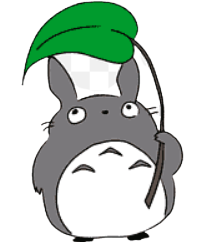
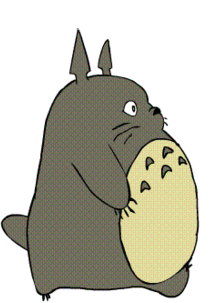
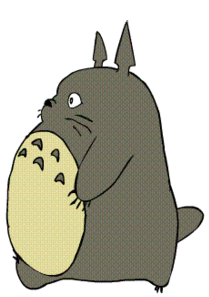
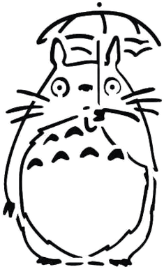

T O T O R O ✧˚ · .

Totoro (トトロ) or Big Totoro (大トトロ, Ō Totoro),
also known as Miminzuku (ミミンズク),
is the title tetartagonist in Studio Ghibli's film
My Neighbor Totoro, as well as its sequel,
Mei and the Kittenbus. He is the mascot of Studio Ghibli.


Totoro
Forest Spirit Extraordinaire
Japanese name
Age
habitat
Gender
Education
Forest Spirit Academy
Majored in Nature Conservation and Joyful Encounters
Graduated with honors
Interests
- Exploring new forests and natural landscapes.
- Spending time with forest creatures
and building friendships.
- Assisting children in discovering the beauty
and wonders of nature.
- ending to gardens and promoting biodiversity.
click to contact Toto
